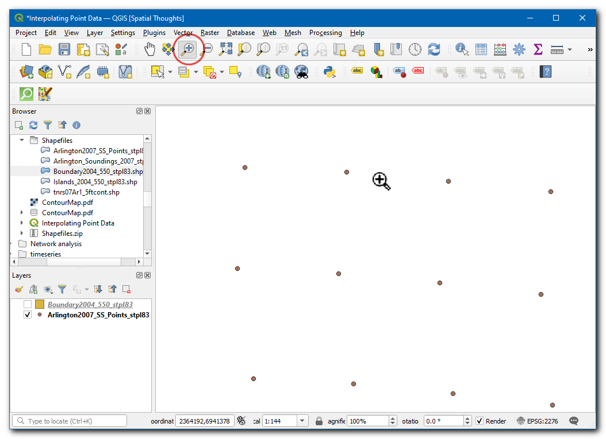
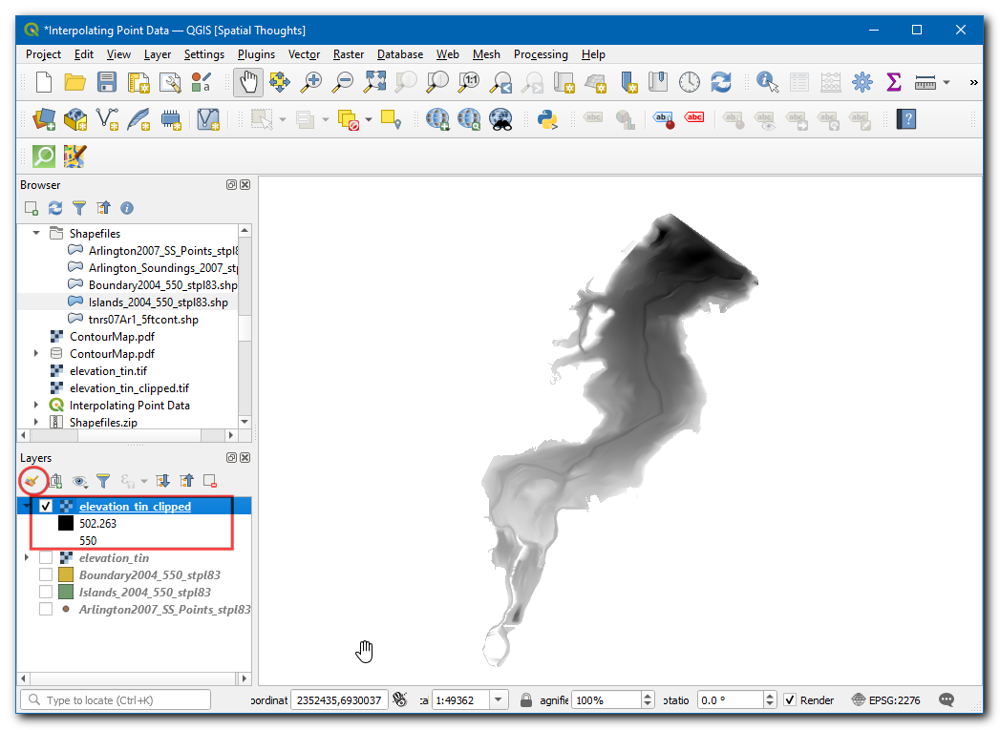

Ujaval Gandhi
Ujaval GandhiInterpolar Datos Punto (QGIS3)¶
La interpolación es una técnica SIG usada comúnmente para crear una superficie continua a partir de puntos discretos. Muchos fenómenos del mundo real son continuos - elevaciones, suelos, temperaturas, etc. Si quisiéramos modelar estas superficies para análisis, sería imposible tomar mediciones a lo largo de la superficie. De ahí que las mediciones son tomadas en varios puntos a lo largo de la superficie y los valores intermedios son inferidos por un proceso llamado ‘interpolación’. En QGIS, la interpolación se obtiene usando las herramientas incorporadas Interpolation de la caja de herramientas Procesos.
Vista general de la tarea¶
Tomaremos mediciones de campo de profundidad para el Lago Arlington en Texas y crearemos un mapa de relieve de elevación y contornos a partir de estas mediciones.
Otras habilidades que aprenderá¶
Crear contornos a partir de datos punto.
Enmascarar valores sin-datos de una capa ráster.
Agregar etiquetas a una capa vectorial.
Obtener los datos¶
Texas Water Development Board provee los `archivos shape para los estudios completados de lago `_.
Descargue los `archivos shape del estudio 2007-12 para el Lago Arlington `_.
Para su comodidad, puede descargar directamente datos muestra usados en este tutorial del enlace abajo.
Fuente de Datos: [TWDB]
Procedimiento¶
Open QGIS, in Browser locate and drag the
Arlington2007_SS_points_stpl83the layer to canvas.

A Select Transformation of Arlington2007_SS_points_stpl83 dialog box will appear, leave the select to default and click OK.

La capa será agregada. Ahora localice y arrastre la capa
Boundary2004_550_stpl83.shpal lienzo.

The layer will be added to the canvas, now turn off this layer to visualize the
Arlington2007_SS_points_stpl83.

Clic al icono Acercar zoom y seleccione un área pequeña en la pantalla. A medida que se acerca más, verá los puntos. Cada punto representa una lectura tomada por una Sonda de Profundidad en la ubicación registrada por un equipo DGPS.

Seleccione la herramienta Identificar y haga clic en un punto. Verá que el panel Identificar resultados aparece a la derecha con el valor del atributo del punto. En este caso, el atributo
ELEVATIONcontiene la profundidad del lago en la localización. Como nuestra tarea es crear un perfil de profundidad y contornos de elevación, utilizaremos estos valores como entrada para la interpolación.

Desde el Explorador localice y arrastre la capa
Islands_2004_550_stpl83.shpal lienzo.

La capa será agregada al lienzo. Esta capa tiene la información acerca de las islas en la región que debería tener una elevación constante (no debería ser interpolada).

Desde la Caja de herramientas Procesos, busque y localice la herramienta . Haga doble clic para iniciarla.
Nota
Los resultados de la interpolación pueden variarsignificativamente dependiendo del método y parámetros que elija. La interpolación QGIS admite los métodos de interpolación Triangulated Irregular Network (TIN) e Inverse Distance Weighting (IDW). El método TIN es comúnmente usado para datos de elevación mientras que el método IDW es usado para interpolar otros tipos de datos como concentraciones de minerales, poblaciones, etc. Vea el módulo Spatial Analysis de la documentación QGIS para más detalles.
In the TIN Interpolation dialog box, select
Arlington2007_SS_points_stpl83as the Vector layer,Elevationas the Interpolation attribute. Then click on the Add icon.

Ahora, seleccione
Islands_2004_550_stpl83como la Capa vectorial,Elevationcomo el Atributo de interpolación. Luego clic en el icono Agregar. Ahora cambie el Tipo de la capa aBreak lines.

Nota
Un Break line nos permite modelar interrupciones repentinas en la elevación mientras se modelan capas de superficie. Cuando se especifica el tipo de capa para que sea Break lines se le dice al algoritmo de interpolación que use una elevación constante para las islas en vez de los valores interpolados de los puntos.
En Extensión clic en el
...y seleccion elBoundary2004_550_stpl83.

En Tamaño ráster salida, define el Tamaño píxel X y Tamaño píxel Y como
5. Luego clic en...bajo Interpolado para guardar la capa comoelevation_tin.tif. Clic Ejecutar.

Ahora se agregará una nueva capa
elevation_tinal lienzo.

De la Caja de herramientas Procesos, busque y localice la herramienta . Doble clic para iniciarla.

En la caja de diálogo Cortar ráster por capa de máscara, seleccione
elevation_tincomo la Capa de entrada,Boundary2004_550_stpl83como la Capa máscara. Luego clic en...bajo Clipped (mask) para guardar la capa comoelevation_tin_clipped.tif. Clic en Ejecutar.

Ahora se agregará una nueva capa
elevation_tin_clippedal lienzo. Clic en el icono Abrir el panel de estilo de Capa.

Defina la Simbología como
Pseudocolor banda única. Clic en la flecha en Rampa de color y seleccioneInvertir rampa de color. Ingrese0en Precisión de etiqueta. Clic Clasificar.

De la Caja de herramientas Procesos, busque y localice la herramienta . Doble clic para iniciarla.

En la caja de diálogo Contorno, seleccione
elevation_tin_clippedcomo la Capa de entrada. Ingrese5.000en el Intervalo entre línea de contorno. Luego clic en...bajo Contornos para guardar la capa comocontour.gpkg. Clic Ejecutar.

Nota
El intervalo es especificado en la unidad del SRC de la capa. Nuestros datos fuente están en EPSG:2276 NAD83 / Texas North Central (ftUS) - por lo que el intervalo para los contornos será interpretado como 5 pies.
Ahora se agregará una nueva capa
contoural lienzo. Clic en el icono Abrir el panel de estilo de capa. Vaya a Etiquetas.

Seleccione
Etiqueta única, en Valor elijaELEV.

Ahora cambie a Ubicación y cámbie el Modo como
Curveado.

If you want to give feedback or share your experience with this tutorial, please comment below. (requires GitHub account)